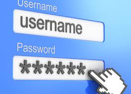

Datasikkerhet definisjon
Definisjonen på datatryggleik er tiltak for å verna informasjonen til verksemda.
Begreper går ut på å beskytta data(filer, informasjon m.m) mot uautorisert tilgang,
sørga for at du ikkje mister noko data, hindra andre for å få kjennskap til data eller at data blir endra.
Det omfattar både vern mot tap av data og mot ulovleg innsyn, misbruk eller tjuveri av informasjon.
Oppdateringer
For å hindra i at hackere skal få till å hacka din datamaskin og få tak i senetiv informasjon,
er det lurt å oppdatere programmer og datamaskinen.
Det kan vera lett å gløyma at du burde oppdatere, då kan det vera lurt å ha automatisk
oppdatering på datamaskinen og på dei ulike programma du bruker, slik at du ikkje gløyme da.
Ofte når du laster ned noko nytt på datamaskinen din får du valg om du vill ha automatisk oppdatering.
då kan det vera lurt å trykka ja

Passord
For å hindra i at du blir lettare hacket er eit STERKT PASSORD VIKTIG!.
Passordet ditt burde inneholde minst 5 ord/tegn, men eg anbefaller 10+ ord og tegn.
Passordet burde væra unikt for kvar konto du lagar på forskjellige nettsidar.
Passordet burde inneholde tall, symboler, stor og små bokstavar og mellomrom om det er mulig
Passordet burde ikkje inneholde ord/tall som kan assosierast med deg.
Det finnes nettstader der du kan skjekke kor sterkt passordet ditt er, som f.eks.
Sjekk kor sterk passordet mitt er.
Autentiseringstypar
Det finnes fleire autentiseringstypar der det blir bekrefta at der faktisk er du som logger inn på kontoen din.
Ein-faktor autensering
Den brukar ein mekanisme frå ein av dei tre kategoriane som kalles ein-faktor autensering.
Den er ansett for å vera den svakaste autenseringa fordi den ikkje gir god beskyttelse mot hackere.
To-faktor autensering
Det er ein autensering som kobinerar to mekanismar som kalles (2FA). Der du f.eks. får
eit tilfeldig passord på mail eller på sms som du må skrive inn kvar gong du skriver inn passordet ditt.
so visst du får ein melding utan og ha skreve inn passordet ditt får du veta at nokon prøver å komma seg inn på kontoen din.
Biometri
Det er ein autensering der du f.eks. bruker fingeravtrykk eller fjeset ditt for å komma inn på kontoen din.
Tilbake til Hovudsida